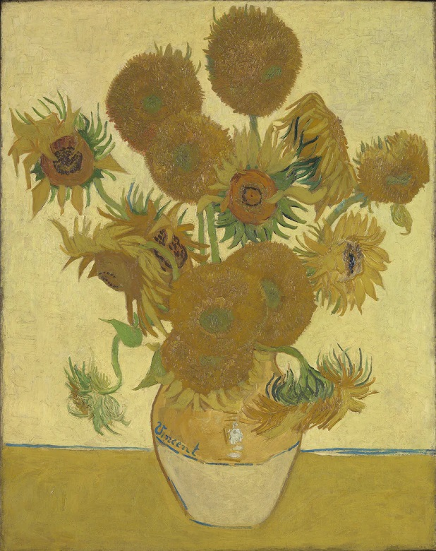

ทานตะวันดอกลำดับที่ 3
ภาพของดอกทานตะวันในแจกัน ตั้งอยู่หน้าพื้นหลังสีเทอร์ควอยส์สว่าง ซึ่งเป็นรูปที่เห็นเมล็ดดอกทานตะวันชัดเจน และแวน โก๊ะเลือกใช้สีเหลืองและสีเทอร์ควอยส์ที่ค่อนข้างคอนทราสต์กัน ปัจจุบันจัดแสดงอยู่ที่พิพิธภัณฑ์ Neue Pinakothek เมืองมิวนิก ประเทศเยอรมนี